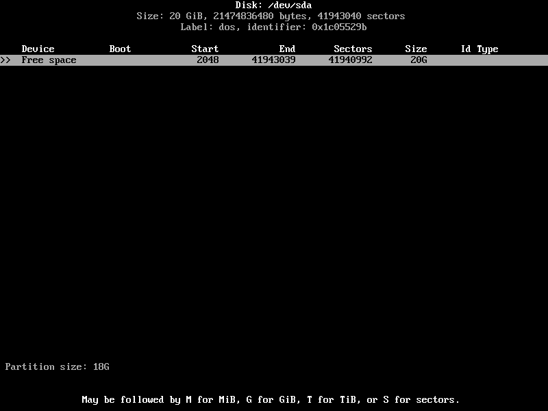
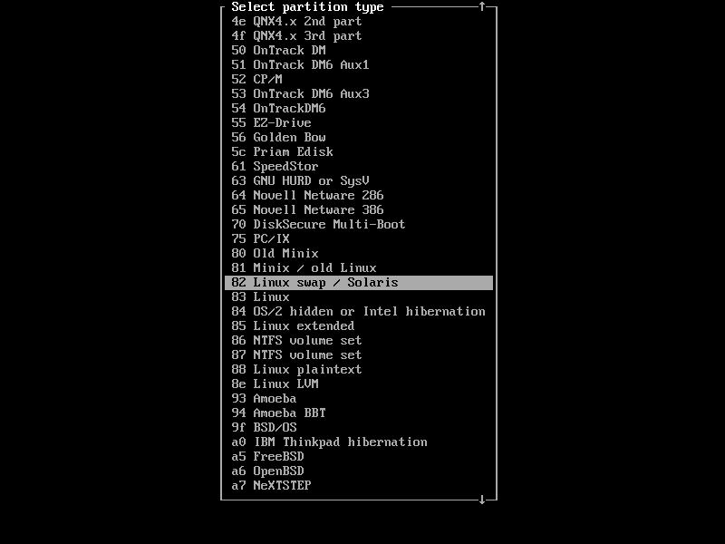
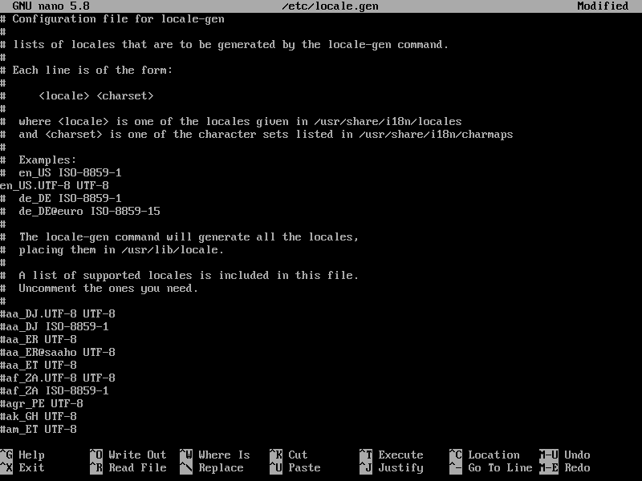
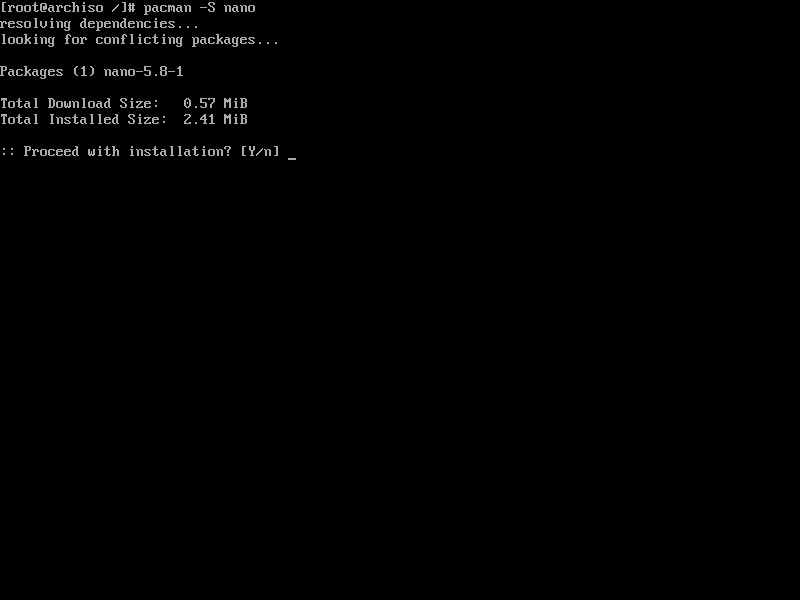
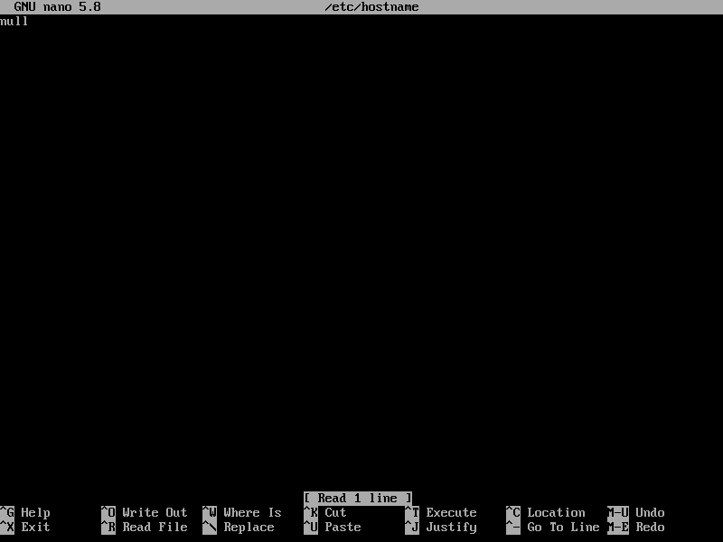

Well, to put it simply, THE OFFICIAL ARCH WIKI INSTALLATION GUIDE SUCKS! wait, let me rephrase that, THE OFFICIAL ARCH WIKI INSTALLATION GUIDE SUCKS! for beginners. If you're a complete noob to Linux or even if you're a intermediate, you'd probably find the Arch wiki a bit too daunting to comprehend. No worries though! The actual installation is fairly easy and if you follow all the steps that I mention, you'd probably have a working machine in about 30 minutes or so.
recommendations
Installing on a Virtual Machine first beforebare metal
You can acquire the Arch linux ISO file from the Arch Download Page . I would recommend torrenting the file by the means of a torrent client, I personally use qBittorent. Alternatively, you can get a direct download link as well. If you're going to do the latter, I'd suggest you'd verify the PGP signature before you follow through the next step.
Flashing the ISO onto a USB drive
The easiest way to flash any ISO onto a USB drive is by using the program Balena Etcher. The flashing instructions are very straightforwad and I dont think it's worth a mention in this guide. Check out their website for more information.
Booting into the live environment
Accessing the system BIOS
Make sure you've plugged in the USB drive after you have finished flashing it. To access the system BIOS, you must first restart and when you get your device manufacturers splash screen, you must enter a specific keyboard combination. This combination varies across manufacturers. For example, in Dell computers, the combition is to press the F2 key repeatedly until you're prompted with the BIOS screen.
It may look something like this:
Configuring the system BIOS to be able to boot into Arch
After you have access to the system BIOS, you have to change some settings first to be able to boot into the live environment.
Disable Secure Boot:
The Arch installation image does not support Secure Boot, if needed you can enable secure boot after the installation though it may lead to some unexpected errors.
Choose your boot mode to Legacy
The installation for the legacy boot mode is a bit different than UEFI. Click the link if you want a tutorial on UEFI
Change your Boot Sequence
Change your boot sequence such that the USB drive which contains the flashed ISO boots first instead of the Hard Drive.
Save all your changes and Reboot!
You will now be prompted into the Arch linux splashscreen. To access the live environment simply press enter on Boot Arch Linux (x86_64)
The Live Environement
Great! you're finnaly booted in the live environement and are now prompeted with this screen:
Wow.... spooky, now what? well first, you have to verify the boot mode.
Verifying Boot Mode
As I mentioned before the steps of installation varies according to boot modes. To what boot mode you are in, run the command:
ls /sys/firmware/efi/efivars
if the command return with no errors, you're in the UEFI boot mode. If no such directory exists, then you have booted into Legacy
Connect to the Internet
Ethernet: Just plug it in ez
WiFi: For WiFi it's a bit more complicated, but easy nevertheless. In this guide, we're gonna connect to the wireless network using the iwctl utility. To start, type in:
iwctl in the terminal. You have now entered the iwctl command prompt. To identify your device, type in:
device list
your device is probably listed as wlan0.
Next, Scan for your available networks in your area:
station yourdevicename scan
Next you can list the name of all available networks using the command:
station yourdevicename get-networks
After you find your desired network, you can connect to it by issuing the command:
station yourdevicename connect yournetworkname
if it's being protected by a passphrase, enter the required password. And you're done! you've successfully connected to the internet, and once you have the internet, you can do anything! To check your connection just ping some random server or website
ping -c 2 google.com
if the process doesnt output an error, then you're golden!
Update your System Clock
To update the system clock, run this command:
timedatectl set-ntp true
To the check the service status, use timedatectl status
Partion the Disk
Though the official Arch wiki reccomends to use fdisk to partition the hard drives, for the purposes of this guide we will be using cfdisk since it's much more beginner friendly and easier to use. To start cfdisk just type in cfdisk into the terminal. You should be prompted into a GUI interface similar to this Note: Select the DOS option if you're on Legacy and GPT if you're running UEFI.
if you didn't get the menu screen, it's ok. That means cfdisk has automatically scanned and discovered your BIOS type.
Deleting existing partitions
Delete an already existing partion by navigation through the GUI and pressing Enter on Delete for the already existing partitions
Making a partion
For linux it's generaly advised to make 2 different partions, one is the linux file system and the other is linux swap file. The swap file exists so that when the RAM is overused, it offloads some of the work to the hard drive instead. Please refer to this image if you want to find out how much swap space you need to allocate to your system
Making a root partition: To make a root partition, press Enter on New and specify the amount of gigabytes you want to allocate to the partition. It should be the total space of yout hard disk minus the amount of swap space you want to create
For example, I have a machine of 20G storage so I allocate 18G for the machine and 2G for the swap file
Next, specify the partion type as primary and navigate to the menu to make it bootable (you will see a little asterik sign next to it)
Making a Swap partiton: To make a swap partion, give the remaining space left on the hard drive and make partition type primary Note: Do not make it bootable!
After this, you have to change the swap file system, because by default it's written as Linux file system.
To change the file system, go to Type and press Enter on 82 Linux swap / Solaris
All you have to do after this is to press Enter on Write and you're all done!
Note: The root partition is sda1 and the swap partition is sda2
Format the Disk
After you've partionioned your drive, you have to format both of them with the appropriate file system. To format the root partition, run:
mkfs.ext4 /dev/sda1
To initialize the swap partition you have just created, run:
mkswap /dev/sda2
Mount the file systems
Mount sda1 to /mnt directory, run:
mount /dev/sda1 /mnt
Enable the swap partition you created with:
swapon /dev/sda2
Installing the System
Installing the Linux, and base packages
To install the base package, linux, and the firmware, run the pacstrap command:
pacstrap /mnt base linux linux-firmware
Installing other required software
Other software you'll need is nano and NetworkManager To install both, run:
pacman -S nano networkmanager
To be able to connect to the internet using NetworkManager and use the GUI at next reboot, run:
Edit /etc/locale.gen and uncomment en_US.UTF-8 UTF-8 and other needed locales. To do that, run:
nano etc/locale.gen
and remove the "#" form en_US.UTF-8 UTF-8 and other locales.
Example
After that, generate the locales by runnng:
locale-gen
Create a locale.conf file and set the LANG variable accordingly:
nano /etc/locale.conf
And type the following arguements:
LANG=en_US.UTF-8

Network Configuring
Create a hostname file and add your host name (it could be anything you want):
nano /etc/hostname
Write your preffered hostname. For example, here I will use the hostname null
Then, you must edit the /etc/hosts file and add matching entries to it. run:
nano /etc/hosts
Add this line to the file with proper indentations:
You can change the root password of the system using the passwd command. In the next reboot, you can enter that to login as the root account. To set the root password, run:
passwd
And follow through the prompts.
Installing a Bootloader
The bootloader we are going to be installing is grub. To install grub, runt the command:
pacman -S grub
Now that we have downloaded grub, we have to specify the drive it should be insalled too, so run:
grub-install /dev/sda
But we're not done yet! Just one more command to make the grub configuration file. To make the file, run:
grub-mkconfig -o /boot/grub/grub.cfg
Reboot into Arch
Exit out of chroot
To exit out of chroot type exit on the terminal or press Ctrl+d
Unmount all partitions
To unmount all partitions, type in:
umount -R /mnt
Reboot
Finnaly, reboot into your new arch system by typing in reboot, unpluging your USB device and changing your boot order to hard disk first.
And that's it!! :D
You've finnaly installed Arch! Wasn't that hard was it? How does it feel being part of 0.5% of the market share? must feel good I bet! You can now gloat your superiority to all your imaginary friends in the typical Arch user fashion.